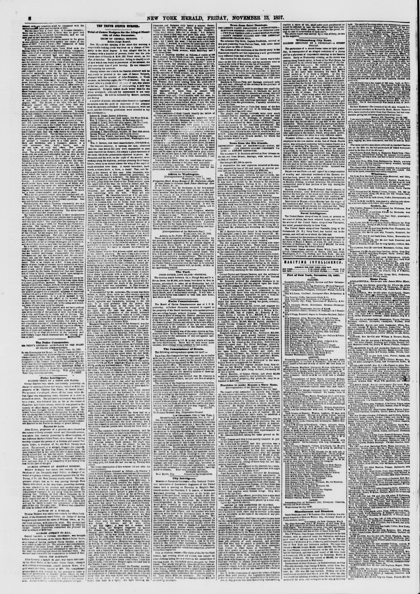

News from Saint Domingo.Noticias de Saint Domingo.
The New York Herald. New York [N.Y.], November 13, 1857. Page 8. Also published as the New York Daily Herald. Published by James Gordon Bennett. A daily newspaper, 1840–1920.The New York Herald. New York [N.Y.], 13 de noviembre de 1857. Página 8. También publicado como New York Daily Herald. Publicado por James Gordon Bennett. Periódico diario, 1840–1920. View the originalVer el original

The New York Herald reported that an expedition of 1,000 men was marching against Samaná, the last location holding out for Báez, while business in Port au Plata and Santiago remained safe despite all provincial military forces being under arms. The Cibao government sought to purchase two small clipper schooners and other armaments, including an 18-inch mortar, to blockade Santo Domingo. Additionally, the newspaper noted local astonishment that the U.S. government had not sent a warship to demand satisfaction regarding the seizure of the American schooner Charles Hill by Báez.El New York Herald notificó que una columna de mil hombres marchaba sobre Samaná, último reducto que sostenía la causa de Báez, mientras el comercio en Puerto Plata y Santiago proseguía a salvo pese a permanecer sobre las armas todas las milicias provinciales. El gobierno del Cibao procuraba adquirir dos goletas de casco fino y otros pertrechos, comprendido un mortero de dieciocho pulgadas, para estrechar el bloqueo sobre Santo Domingo. El diario hacía constar la sorpresa de los pobladores ante la omisión del gobierno de Washington de comisionar un buque de guerra para reclamar reparaciones por el embargo de la goleta estadounidense Charles Hill dispuesto por Báez.
FULL TEXT:TEXTO COMPLETO:
The New York Herald November 13, 185713 de noviembre de 1857
News from Saint Domingo.Noticias de Santo Domingo.
THE LIBERTY PARTY ORGANIZING A CONSTITUTION—EL PARTIDO DE LA LIBERTAD ORGANIZANDO UNA CONSTITUCIÓN—
ELECTIONS ORDERED—SIEGE OF SAN DOMINGO CITYELECCIONES ORDENADAS —SITIO DE LA CIUDAD DE SANTO DOMINGO
—TWO WAR VESSELS AND A LARGE MORTAR WANTED—SE NECESITAN DOS BUQUES DE GUERRA Y UN GRAN MORTERO
—BAEZ’S FRIENDS FALLING OFF—THE AMERICAN—LOS AMIGOS DE BÁEZ SE ESTÁN APARTANDO —LA GOLETA
SCHOONER CHARLES HILL.ESTADOUNIDENSE CHARLES HILL.
The schooner City Belle, Captain Pendleton, arrived at this port yesterday from Port au Plata, with news dated at that place on 29th of October.La goleta City Belle, capitán Pendleton, llegó a este puerto ayer procedente de Puerto Plata, con noticias fechadas en ese lugar el 29 de octubre.
The authors of the revolution of the liberty party in the Dominican republic are fast organizing a new government very different from that of Senor Baez.Los autores de la revolución del partido de la libertad en la república dominicana están organizando rápidamente un nuevo gobierno muy diferente del del Señor Báez.
The election for the deputies of the nation was to take place on the 10th of November, and the members were to meet at the town of Moca on the 1st of December.La elección para los diputados de la nación había de tener lugar el 10 de noviembre, y los miembros habían de reunirse en el pueblo de Moca el 1 de diciembre.
General Santana and several other valiant Generals were besieging the city of St. Domingo with a force of 8,000 men. The besiegers are very moderate in their fire against the city, as it was momentarily expected that Baez would be forced to capitulate. An expedition of 2,000 men strong were marching against Samana, the only place holding for Baez.El General Santana y varios otros valientes Generales estaban sitiando la ciudad de Santo Domingo con una fuerza de 8,000 hombres. Los sitiadores son muy moderados en su fuego contra la ciudad, ya que se esperaba momentáneamente que Báez sería forzado a capitular. Una expedición de 2,000 hombres fuertes estaba marchando contra Samaná, el único lugar que se mantenía por Báez.
Business in Port au Plata and Santiago continued quite safe and easy, although all the military in the province of Cibao were under arms.Los negocios en Puerto Plata y Santiago continuaron bastante seguros y fáciles, aunque todos los militares en la provincia del Cibao estaban bajo armas.
The Cibao government wish to purchase two small clipper schooners of 150 to 180 tons, to blockade the port of St. Domingo; vessels that are staunch and strong, that will be able to carry a twenty-four pounder upon a pivot, besides small guns of smaller calibre. There being no vessels in port suitable, any American speculator might find a good offer from the government, if quickly attended to, in Port au Plata.El gobierno del Cibao desea comprar dos pequeñas goletas clíper de 150 a 180 toneladas, para bloquear el puerto de Santo Domingo; buques que sean sólidos y fuertes, que puedan llevar un cañón de veinticuatro libras sobre un pivote, además de pequeños cañones de menor calibre. No habiendo buques en puerto adecuados, cualquier especulador estadounidense podría encontrar una buena oferta del gobierno, si es atendido rápidamente, en Puerto Plata.
News had reached Port au Plata that many of the first families had lately left the city of St. Domingo, besides natives that Baez has sent away.Noticias habían llegado a Puerto Plata de que muchas de las primeras familias habían dejado últimamente la ciudad de Santo Domingo, además de nativos que Báez ha enviado fuera.
The people and foreign residents were very much astonished that the American government did not send a vessel of war to St. Domingo, to demand satisfaction in the case of the American schooner Charles Hill, which was seized by Baez (valued at $10,000), and as yet not claimed by the American government. The American Consul at St. Domingo had sent all the documents relative to this affair in May last to Washington.El pueblo y los residentes extranjeros estaban muy asombrados de que el gobierno estadounidense no enviara un buque de guerra a Santo Domingo, para demandar satisfacción en el caso de la goleta estadounidense Charles Hill, que fue capturada por Báez (valorada en $10,000), y todavía no reclamada por el gobierno estadounidense. El Cónsul Estadounidense en Santo Domingo había enviado todos los documentos relativos a este asunto en mayo pasado a Washington.
Fighting men, friends to the republic, would be well received. Arms and ammunition were in good demand, and they were in want of an 18-inch mortar, for which the highest rates would be paid.Hombres de pelea, amigos de la república, serían bien recibidos. Armas y municiones estaban en buena demanda, y necesitaban un mortero de 18 pulgadas, por el cual se pagarían las tasas más altas.